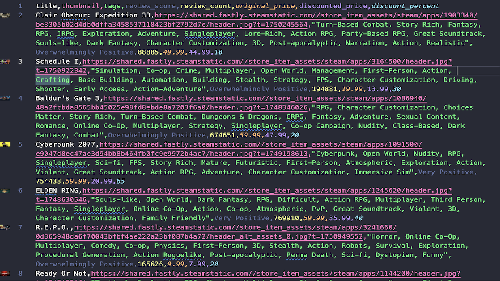

Steam Sale Scraper
Scrapes Steam Store sale pages to collect the most discounted games, including title, tags, reviews, pricing, and discount percentage.
- Handles JS-rendered pages with Playwright
- Config-driven selectors; modular parsing
- Validation & post-processing pipeline